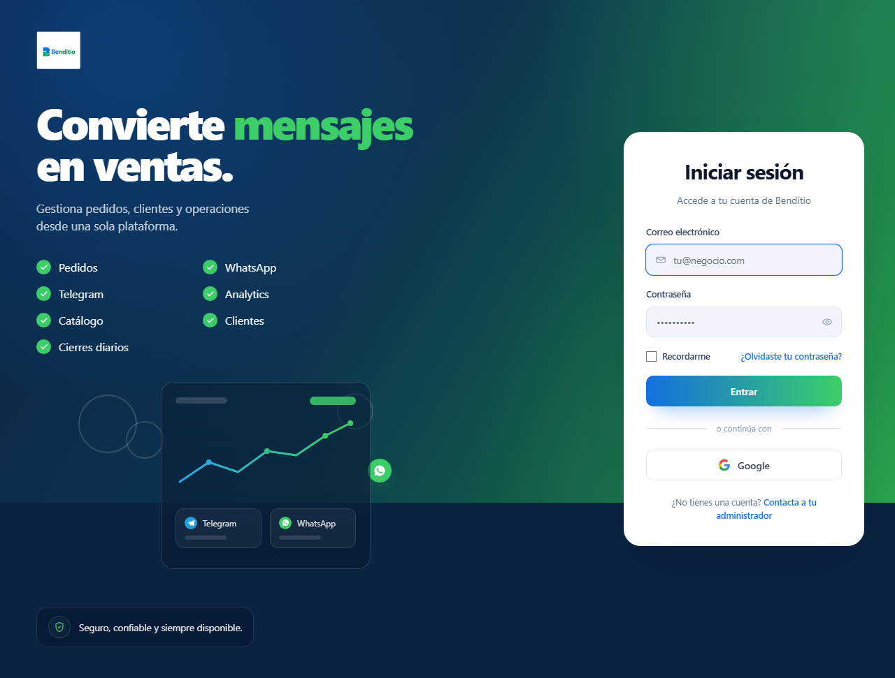
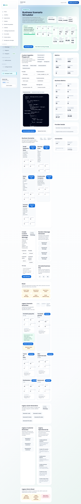
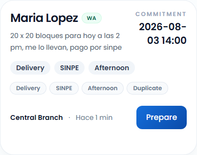
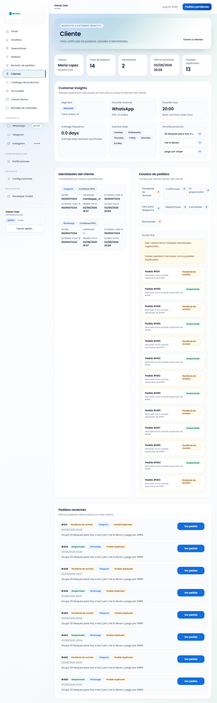

Producto
Benditio organiza pedidos que llegan por mensajería, resuelve identidad de cliente, interpreta el contenido del mensaje y guía al operador hasta el despacho. El objetivo es reducir lectura manual y mantener una cola operativa clara.
Qué hace
Recibe mensajes, crea pedidos, interpreta cumplimiento y prioriza trabajo.
Qué no hace
No reemplaza al operador ni promete integraciones externas cerradas.
Canales
WhatsApp, Telegram e Instagram, con distinto nivel de madurez actual.
Cola
`DO NOW`, `NEXT` y `COMPLETED` ordenan el trabajo operativo del día.
Flujo de canal a pedido
Resumen del recorrido desde el mensaje del cliente hasta el pedido listo para operar.
| Canal | WhatsApp, Telegram o Instagram. |
|---|---|
| Entrada | Webhook, simulador o carga controlada. |
| Identidad | Se resuelve por proveedor, chat, teléfono y nombre. |
| Pedido | Se crean artículos y estado inicial. |
| Cumplimiento | Se calculan fecha, hora, entrega, pago y urgencia. |
| Duplicados | Se separa duplicado técnico de posible duplicado de negocio. |
| Operación | El pedido entra a la cola visible para revisión humana. |
Flujo visual
Versión HTML/SVG equivalente al flujo Mermaid del manual técnico.
Flujo del operador
DO NOW
Atiende primero lo urgente. La tarjeta te muestra el compromiso y el botón principal que toca ahora.
NEXT
Estos pedidos vienen después. No son urgentes, pero ya tienen contexto operativo.
COMPLETED
Pedidos despachados en el día. Deben seguir visibles después de refrescar.
Indicador live
`Live`, `Reconectando...` o `Sin conexion` te dicen si la cola sigue leyendo el feed.
Operaciones actual
La experiencia actual usa tarjetas, un drawer lateral y una acción guiada. Los textos visibles hoy mezclan nombres en inglés y español, por lo que conviene operar con el significado funcional de cada zona, no solo con la etiqueta literal.
| Tarjeta | Cliente, compromiso, entrega, pago, sucursal y botón de acción. |
|---|---|
| Drawer | Detalle completo, artículos, parser, plan, riesgo, duplicado, historial y contexto. |
| Acción | Confirmar, preparar, marcar listo o despachar según el estado. |
| Refresh | El pedido despachado debe permanecer en `COMPLETED` tras refrescar. |
Capturas del piloto
Las rutas son relativas y se resuelven desde esta carpeta HTML.







Guía rápida
Qué hace Benditio
Organiza pedidos, interpreta cumplimiento y ayuda a decidir qué atender primero.
Acción principal
Confirmar, preparar, marcar listo o despachar según el estado.
Qué revisar
Artículos, entrega, pago, duplicados, riesgo y contexto del cliente.
Duplicados
Diferencia duplicado técnico de posible duplicado de negocio antes de avanzar.
Checklist del piloto
| Antes | `npm run pilot` reporta `READY`, el entorno está aislado y los artefactos existen. |
|---|---|
| Durante | Login, toolkit, home de operaciones, drawer, workflow y refresh verificados. |
| Después | Screenshots capturados, feedback del usuario registrado y evidencia guardada. |
Limitaciones
- Instagram sigue como placeholder.
- Telegram no tiene recepción real de webhook completamente cerrada.
- WhatsApp externo sigue siendo una integración parcial para el piloto.
- El operador sigue siendo quien confirma el avance final.
- Los casos ambiguos aún requieren revisión humana.
Soporte y escalamiento
Si algo falla, registra el `order_id`, canal, estado y captura. Luego revisa artifacts/pilot/latest/report.html y el resumen E2E antes de escalar al facilitador.